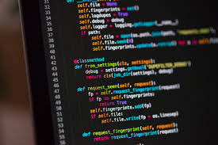
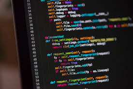

Bachiller con orientación en INFORMÁTICA
En el IPEM 304 Juan Carlos Ferrero te ofrecemos una formación que mira hacia adelante y se conecta con el mundo digital que ya estamos viviendo. A partir de 4° año, comenzás un trayecto más profundo en tecnología, programación e innovación, diseñado para que desarrolles habilidades que hoy resultan indispensables para seguir estudiando, trabajar en diversos campos o impulsar tus propios proyectos. Este recorrido no aparece de golpe: desde los primeros años vas explorando herramientas digitales que fortalecen el pensamiento lógico, la creatividad y la capacidad de resolver problemas de manera autónoma. En cada clase se combina teoría, práctica y proyectos concretos, para que lo que aprendés tenga sentido en tu vida cotidiana y en tu futuro.
¿Qué vas a aprender?
Nuestro enfoque tecnológico te permite avanzar paso a paso, incorporando lenguajes de programación, recursos digitales y dispositivos que te preparan para un mundo laboral y académico cada vez más dinámico.
Programación: construcción de algoritmos, lógica computacional y primeros lenguajes.
Scratch: creación de animaciones, juegos y simulaciones interactivas.
Robótica: armado, análisis y programación de robots para resolver desafíos reales.
Sistemas informáticos y ofimática: uso eficiente de computadoras, aplicaciones, archivos, redes y herramientas de productividad.
Resolución de problemas con herramientas digitales: estrategias para buscar información, analizar datos, diseñar soluciones y trabajar de manera colaborativa.
Este recorrido te permite no solo aprender a usar tecnología, sino comprenderla, analizarla y crear con ella. La idea es que salgas del colegio sabiendo mucho más que manejar una compu: queremos que puedas imaginar, construir y transformar. Si necesitás extenderlo todavía más o adaptarlo a un estilo más formal para la web, lo seguimos trabajando.
Lenguajes de Programación
 
